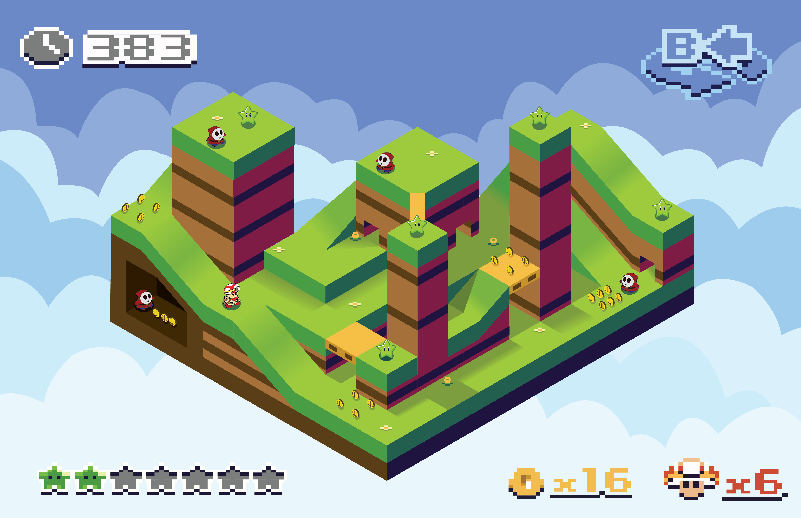
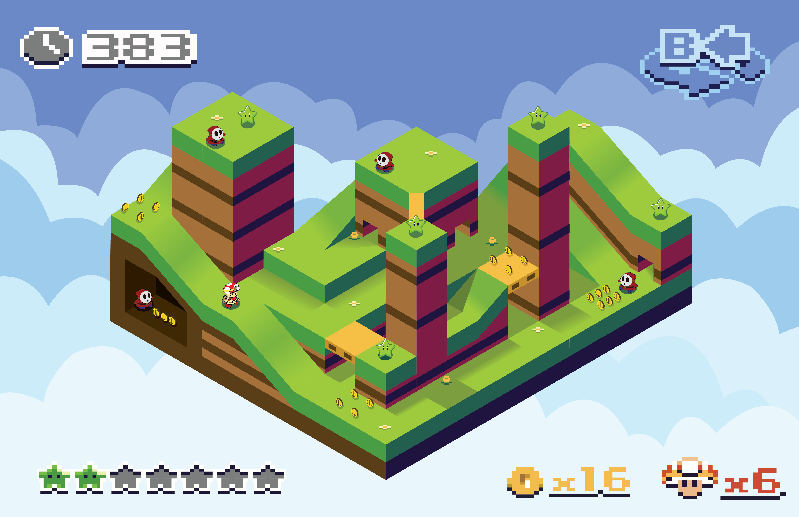

Captain Toad's little quest
In my Illustration class during my third semester, we were tasked to create an isometric illustration on paper and then design it on Adobe illustrator. We did a few exercises and it was pretty fun!
There is this game called Captain Toad Treasure Tracker on the Wii U and Nintendo Switch that I played a long time ago. So I wanted to base off my drawing off the game. I designed my illustration a sa custom level, incorporating game mechanics like the helipads, Green stars, gold coins and shy guy enemies. The little cherry on top is my Captain Toad design and the a pixel art Ui to truly feel like you are playing a video game.
Project Type
Isometric illustration
Tools Used
Adobe illustrator & sketchbook
 
